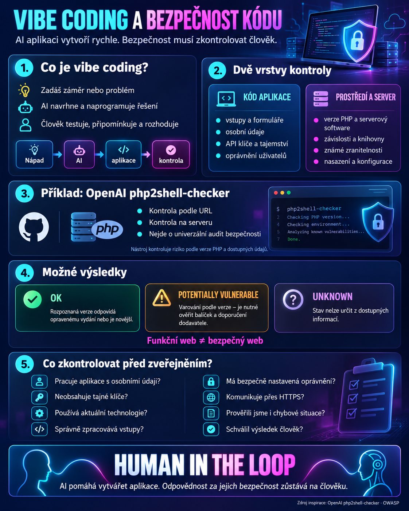

Ještě nedávno znamenalo vytvořit vlastní aplikaci naučit se programovací jazyk, orientovat se ve vývojových nástrojích a strávit hodiny psaním kódu. Dnes mnohdy stačí popsat, co chceme vytvořit. To je obrovská příležitost. Ale také důvod začít více přemýšlet o bezpečnosti.


Od nápadu k vlastní aplikaci
Vibe coding mění způsob, jakým vzniká software. Člověk nemusí začínat zdrojovým kódem. Začíná potřebou.
Může například umělé inteligenci zadat:
AI navrhne strukturu aplikace, vytvoří její rozhraní a naprogramuje požadované funkce. Člověk výsledek zkouší, připomínkuje a postupně vylepšuje.
Tak mohou vznikat interaktivní pracovní listy, procvičovací hry, vědomostní kvízy, simulace, jednoduché výukové aplikace nebo nástroje pro organizaci práce.
Přínos je zřejmý: učitel se může více soustředit na vzdělávací cíl a méně na technické detaily.
Jenže právě tady začíná otázka, na kterou bychom neměli zapomínat.
Funguje to. Ale je to bezpečné?
Představme si, že nám AI vytvoří webovou aplikaci. Má příjemný vzhled, tlačítka fungují, odpovědi se vyhodnocují a při prvním vyzkoušení nenajdeme žádnou chybu.
Znamená to, že ji můžeme bez obav zveřejnit?
Ne nutně.
Za fungujícím rozhraním se mohou skrývat problémy, které běžný uživatel nepozná.
Aplikace může například nesprávně zpracovávat vstupní údaje, ukládat citlivé informace na nevhodné místo, obsahovat veřejně dostupný API klíč nebo používat zastaralou a zranitelnou součást systému.
U aplikací s přihlašováním může být problém také v nedostatečném ověřování uživatelů a jejich oprávnění.
To není důvod vibe coding odmítat. Je to důvod změnit náš pracovní postup.
Vytvoření aplikace a ověření její bezpečnosti musí být dvě samostatné činnosti.
Dvě vrstvy bezpečnosti
Při kontrole webové aplikace je užitečné rozlišovat dvě oblasti.
První vrstva: samotný kód aplikace.
Zajímá nás, jak aplikace pracuje s uživatelskými vstupy, zda chrání údaje, jak ověřuje přístup, jestli nezveřejňuje přístupové klíče a zda používá bezpečné knihovny.
S tím může pomoci kontrola zdrojového kódu, specializované nástroje, automatické testy a nezávislá odborná revize.
Druhá vrstva: prostředí, ve kterém aplikace běží.
I správně napsaná aplikace může být ohrožená, pokud ji provozujeme na zastaralém serveru nebo na softwaru se známou bezpečnostní zranitelností.
A právě zde se dostáváme k zajímavému příkladu od OpenAI.
OpenAI a kontrola zranitelností PHP
OpenAI zveřejnila na GitHubu nástroj php2shell-checker.
Jeho účel je poměrně úzce vymezený: zjistit, zda používaná verze PHP může být zranitelná vůči konkrétním bezpečnostním problémům označovaným jako PHP2Shell.
PHP je programovací jazyk využívaný na mnoha webových serverech. Na rozdíl od jednoduché statické stránky může PHP na serveru zpracovávat požadavky, pracovat s databází a vytvářet dynamický obsah.
Pokud server používá zranitelnou verzi PHP, může představovat bezpečnostní riziko bez ohledu na to, zda aplikaci napsal člověk, nebo umělá inteligence.
Nástroj OpenAI nabízí dvě základní možnosti kontroly.
Kontrola podle adresy webu: Pokud máme k dispozici pouze URL, můžeme se pokusit zjistit verzi PHP z informací, které server veřejně poskytuje.
Kontrola na serveru: Pokud máme oprávněný přístup k serveru, lze zjistit, který balíček PHP web skutečně obsluhuje (například PHP-FPM nebo modul Apache), a porovnat jeho přesnou verzi s bezpečnostními oznámeními dodavatele (Debian, Ubuntu, RHEL) nebo s opravenými verzemi PHP. Rozhoduje skutečně běžící instalace, přesná verze balíčku a opravy od dodavatele.
OpenAI k nástroji poskytuje také dva SKILLy pro Codex: phpcheck-url a phpcheck-server. Ty pomáhají AI agentovi provést příslušný typ kontroly. Kontrola na serveru je přitom postup pro agenta podle SKILLu phpcheck-server, nikoli samostatný příkaz skriptu.
Nejde o nástroj, který automaticky opraví celý web nebo zkontroluje všechny chyby v jeho zdrojovém kódu.
A to je důležité.
Co znamenají výsledky kontroly?
Nástroj rozlišuje tři základní výsledky.
OK: Verze PHP, kterou server o sobě uvádí, odpovídá opravenému vydání nebo je novější. Podle dokumentace nástroje ověřené k 25. 10. 2026 jde o verze 8.2.35, 8.3.36, 8.4.27 a 8.5.12; tento seznam se může v čase měnit. Výsledek OK neověřuje skutečně instalovanou verzi PHP na serveru a neprokazuje bezpečnost celé aplikace.
POTENTIALLY VULNERABLE (potenciálně zranitelné): Uvedená verze je v ohrožené řadě (nižší než opravené vydání, nebo jde o starou větev 5.4–8.1). Je to varování podle verze, nikoli potvrzení zranitelnosti. Je potřeba ověřit stav balíčku podle oznámení dodavatele a případně zajistit nápravu.
UNKNOWN: Nástroj nedokázal stav určit. Server například nemusí veřejně poskytovat potřebnou informaci. Neznámý výsledek nelze považovat za potvrzení bezpečnosti.
Výsledek je nutné porovnat s aktuálními bezpečnostními informacemi od PHP nebo dodavatele serverové instalace. Někteří dodavatelé totiž bezpečnostní opravy přenášejí i do balíčků, jejichž viditelné číslo verze zůstalo starší.
Stejně tak je důležité vědět, že samotná kontrola podle HTTP hlaviček neposkytuje úplný obraz o konfiguraci serveru.
Žádný jednotlivý nástroj nenahrazuje komplexní bezpečnostní kontrolu.
Týká se to i učitele, který si vytváří vlastní aplikaci?
Ano, ale záleží na tom, jaký nástroj vytváří.
Jednoduchá hra naprogramovaná v HTML, CSS a JavaScriptu, která běží pouze v prohlížeči a nepracuje se školními osobními údaji, má jiná rizika než systém s přihlašováním, databází a serverovým zpracováním dat.
Statická stránka například nemusí používat PHP vůbec. V takovém případě nebude kontrola PHP2Shell správným nástrojem pro posouzení její bezpečnosti.
Pokud ale provozujeme aplikaci na PHP serveru, může být kontrola verze PHP jedním z užitečných kroků.
A jestliže tvoříme aplikaci, která zpracovává žákovské účty, hodnocení nebo jiné osobní údaje, nestačí běžná kontrola funkčnosti. Je nutné zapojit také odborné posouzení bezpečnosti a ochrany údajů.
Deset věcí, které zkontrolovat před zveřejněním AI aplikace
- Víme, co aplikace skutečně dělá? Rozumíme alespoň jejím základním funkcím, toku dat a tomu, zda komunikuje s externími službami?
- Pracuje s osobními údaji? Pokud to není nezbytné, navrhněme aplikaci tak, aby je vůbec nepotřebovala.
- Neobsahuje přístupové klíče? Hesla, tokeny ani soukromé API klíče nesmí být veřejně dostupné ve zdrojovém kódu.
- Používá aktuální technologie? Ověřme používané knihovny, závislosti, frameworky a případný serverový software.
- Správně zpracovává vstupy? Formuláře a textová pole musí počítat i s nečekanými nebo škodlivými vstupy.
- Jsou správně nastavená oprávnění? Pokud má aplikace přihlašování, musí bezpečně oddělovat uživatele a jejich data.
- Komunikuje bezpečně? Veřejná aplikace má používat HTTPS a chránit přenášené informace.
- Prověřili jsme prostředí? Pokud používáme PHP, ověřme jeho aktuálnost a známé zranitelnosti. U jiných technologií použijme odpovídající kontroly.
- Testovali jsme i chybné situace? Nestačí zjistit, že běžný postup funguje. Vyzkoušejme neplatné vstupy, chybějící údaje a nečekané chování.
- Schválil výsledek člověk? Před zveřejněním musí někdo zkontrolovat změněné soubory, výsledky testů a případná rizika. U citlivých systémů je potřebná také nezávislá odborná kontrola.
Můžeme požádat AI, aby zkontrolovala práci jiné AI?
Ano. A je to velmi užitečný krok, pokud nepřeceníme jeho spolehlivost.
Po vytvoření aplikace můžeme druhému AI agentovi zadat například:
Taková revize může odhalit řadu problémů. Neměli bychom ji ale považovat za bezpečnostní certifikát.
Důležité je i to, aby AI dostala pouze údaje, které smí zpracovávat, a aby odeslání kódu do externí služby neporušovalo pravidla organizace.
Human in the Loop: člověk zůstává odpovědný
Vibe coding nám umožňuje vytvářet digitální nástroje, na které bychom si dříve možná netroufli. Díky AI se z nápadu může stát funkční aplikace výrazně rychleji.
Rychlost však nemění odpovědnost.
AI může kód napsat. Jiná AI může upozornit na jeho slabiny. Specializovaný nástroj může prověřit konkrétní zranitelnost.
Ale rozhodnutí, zda je aplikace připravena pro skutečné uživatele, musí vycházet z ověřených výsledků a odpovídajícího lidského dohledu.
Budoucnost vibe codingu není jen v tom, že dokážeme programovat rychleji. Je také v tom, že se naučíme mnohem lépe kontrolovat, co jsme s pomocí AI vytvořili.